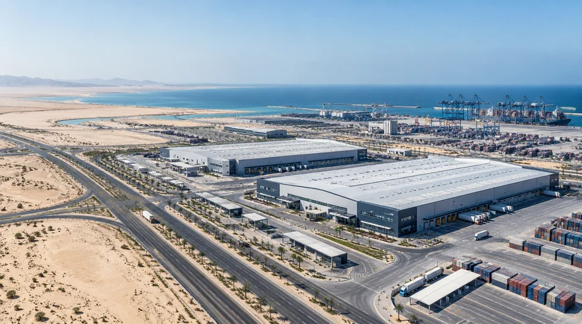
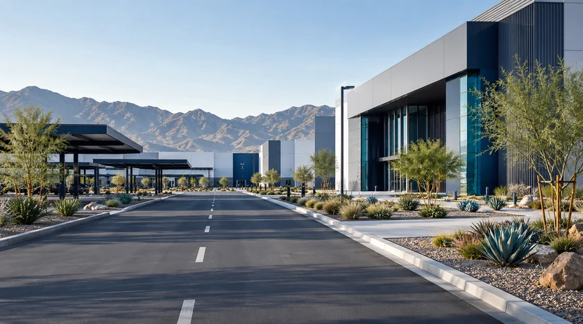

Manufacturing base
Land, real estate and equipment bring the foundations of local manufacturing into one connected environment.
- Purpose-built industrial infrastructure under development

TASARU Supplier Hub is located within MASARAT Mobility Park™ in the Special Economic Zone at King Abdullah Economic City (KAEC).
From KAEC to the supplier hub, discover the places that connect global expertise with local manufacturing.
Land, real estate and equipment bring the foundations of local manufacturing into one connected environment.
Logistics connections link the Hub with domestic, regional and international markets.
Local component manufacturing connects global supplier expertise with the growing Saudi OEM base.

MASARAT Mobility Park™ provides the automotive and mobility environment. Within it, TASARU Supplier Hub focuses on the suppliers and capabilities that help turn localization into production.
For supplier, partnership, media or stakeholder inquiries, contact our team.